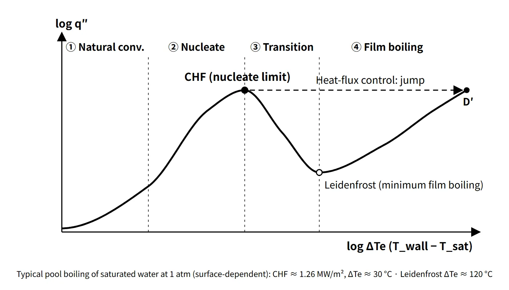

Thermal Hydraulics & Thermodynamics · C-TH-007
Critical Heat Flux and DNB (CHF) — The Heat-Flux Limit Where Nucleate Boiling Ends and Wall Temperature Jumps
Why a fuel rod's wall temperature jumps once heat flux passes CHF, and how DNB in PWRs differs from dryout in BWRs and CANDU.
Critical heat flux (CHF) is the heat flux at which a heated surface loses sustained contact with the liquid and boiling heat transfer starts to deteriorate sharply — in other words, the maximum heat flux at which nucleate boiling can be maintained. When bubbles crowd near the wall and form a vapor film under subcooled-to-low-quality, high-heat-flux conditions, it is called departure from nucleate boiling (DNB); when the liquid film on the wall dries out in high-quality annular flow, it is called dryout.
This note covers the phenomenon and its value (CHF).
Principle and mechanism
Where CHF sits on the boiling curve
For a heated surface immersed in saturated water at 1 atm, raising the wall superheat ΔTe = Twall − Tsat produces the following sequence. Textbook typical values (flat plate, Zuber family) are listed beside values read from the figure of the 2025 exam. That figure uses surface temperature on the horizontal axis, so it was converted with ΔTe = T − 100 °C; it appears to be an experimental curve for a thin heated wire, which is why it differs from the typical values. Values depend on the surface and geometry.
| Region or point (2025 exam labels) | Name | Characteristics | Textbook typical value | Read from the 2025 exam figure |
|---|---|---|---|---|
| A–B | Natural convection | Single phase, low heat transfer coefficient | ΔTe below about 5 °C | Up to B, ΔTe about 19 K |
| B | Onset of nucleate boiling (ONB) | Bubbles start forming in wall cavities; at onset the superheat is released and wall temperature drops to B′ (hysteresis) | ΔTe about 5 °C | ΔTe about 19 K, about 7 W/cm² (B′ about 10 K) |
| B′–C | Nucleate boiling (isolated bubbles) | Bubbles detach and stir the liquid; q″ rises steeply, roughly ∝ ΔTe³ | ΔTe about 5–10 °C | ΔTe about 10–31 K |
| C–D | Nucleate boiling (jets and columns) | Bubbles merge into columns and increasingly hinder liquid resupply | ΔTe about 10–30 °C | ΔTe about 31–36 K |
| D | Critical heat flux (CHF) | Maximum heat flux | About 1.26 MW/m², ΔTe about 30 °C | About 100 W/cm² (1.0 MW/m²), ΔTe about 36 K |
| D–E | Transition boiling | Partial vapor film; heat flux falls as ΔTe rises; unstable under heat-flux control | ΔTe about 30–120 °C | ΔTe about 36–172 K |
| E | Minimum film boiling point (Leidenfrost) | Minimum heat flux of film boiling | About 0.02 MW/m², ΔTe about 120 °C | About 20 W/cm² (0.2 MW/m²), ΔTe about 172 K |
| E–F | Film boiling | Conduction through a stable vapor film, with radiation increasing at high temperature | — | F about 145 W/cm², ΔTe about 1,900 K |
The numbers 1–5 in the 71st exam, session 3, Q2 refer to the same curve. Per the figure on the original question paper, they are ① natural convection ② nucleate boiling ③ peak (CHF) ④ transition boiling ⑤ film boiling.
Pool-boiling CHF is obtained from the Zuber-type expression of hydrodynamic instability theory:
- q″CHF = C · hfg · ρv1/2 · [σ g (ρl − ρv)]1/4
- C = 0.131 (Zuber's original) or 0.149 (Lienhard). This note uses 0.149 by default. For water at 1 atm, 0.149 gives about 1.26 MW/m² and 0.131 about 1.11 MW/m² — the same magnitude as D in the exam figure (about 1.0 MW/m²).
![Log–log pool boiling curve of saturated water at 1 atm, heat flux from 0.001 to 10 MW/m² against wall superheat from 1 to 3,000 °C, with regions of natural convection, nucleate, transition and film boiling, points A, B (ONB), C, D (CHF about 1.26 MW/m²), E (minimum film boiling, Leidenfrost) and F, a dashed horizontal jump from D to D′ on the film-boiling branch under heat-flux control, a dashed return from E to E′ on the nucleate branch, and cards giving the Zuber-type equation q″CHF = C·hfg·ρv^1/2·[σg(ρl − ρv)]^1/4 with C 0.131 or 0.149 and about 1.26 MW/m² for water at 1 atm](../../assets/images/concepts/c-th-007-chf-dnb/fig1-boiling-curve-chf.webp)
Why exceeding CHF means a "jump"
A fuel rod is a heated surface whose heat flux is fixed by the fission power (a heat-flux-controlled surface). Once the heat flux exceeds D, it cannot follow the transition-boiling branch. The only state that can pass the same heat flux is D′ on the film-boiling branch, so the wall temperature shoots up to it. In the pool-boiling example, ΔTe at D′ is over 1,000 °C, which is why melting of metal heaters was called burnout. Conversely, when the heat flux is lowered, film boiling persists down to E and then returns to E′. Because of this hysteresis, once DNB occurs, a small reduction in power does not restore nucleate boiling immediately; rewetting requires the wall temperature to fall below the minimum film boiling temperature.
DNB and dryout — same CHF, different mechanisms
- DNB (PWR): subcooled to low quality (local equilibrium quality xe around 0 or below) and high heat flux. Bulk liquid is still present, but the bubble layer near the wall crowds and coalesces until a local vapor film covers the wall. Explanatory models include bubble crowding (Weisman–Pei), sublayer dryout beneath bubbles (Lee–Mudawar, Katto) and hydrodynamic instability; there is no single accepted theory. Because it occurs at high heat flux, the wall temperature rise is fast and large.
- Dryout (BWR, CANDU): in high-quality annular flow, the liquid film on the wall is exhausted by evaporation and entrainment. It is governed less by local heat flux than by the heat accumulated upstream (local quality, boiling length), so BWRs manage it with the critical power ratio (CPR) instead of a local heat-flux ratio. Steam and droplet cooling remain, so the temperature rise is generally milder than for DNB, though it depends on conditions.
![Left: heated vertical channel with flow regimes from single-phase liquid and subcooled boiling through bubbly and slug or churn flow to annular flow as quality rises, with close-ups of DNB (bubble crowding forming a vapor film, PWR, high heat flux, subcooled to low quality) and dryout (wall liquid film depleted, BWR and CANDU, high-quality annular flow). Right: W-3 critical heat flux from 0 to 5 MW/m² against local quality from −0.15 to +0.15 at 15.5 MPa for mass fluxes 2,000, 3,500 and 5,000 kg/m²s, showing CHF falling from 2.17 to 0.95 MW/m², about 56 percent, from xe 0 to 0.15 at G 3,500, and the mass-flux effect reversing near xe 0.094](../../assets/images/concepts/c-th-007-chf-dnb/fig2-dnb-dryout-w3.webp)
Influencing factors
How CHF changes when one factor increases with the others fixed:
| Factor increased | CHF | Reason or caveat |
|---|---|---|
| Local equilibrium quality (enthalpy) | Decreases strongly | The strongest factor. In the W-3 example (G 3,500), about 56 % lower from xe 0 to 0.15 |
| Inlet subcooling | Increases | Local quality at the same height is lower |
| Mass flux G | Increases at low quality | Effect weakens or reverses at high quality (curves cross near xe about 0.1 in the W-3 example) |
| Pressure | Maximum at intermediate pressure | At fixed quality, water peaks at about 3–7 MPa and decreases toward the critical pressure |
| Hydraulic diameter | Decreases | CHF rises in smaller channels |
| Upstream heat-flux concentration (non-uniform axial shape) | Downstream CHF decreases | Upstream bubble layer and enthalpy build-up; corrected by the W-3 F-factor |
| Mixing-vane spacer grids | Increases | Turbulent mixing breaks up the wall bubble layer |
Two pressure effects must be kept apart. In the PWR operating range, a pressure drop lowers the saturation temperature, reduces subcooling and raises local quality, so DNBR falls. That is a different matter from the effect of pressure at fixed quality.
How CHF is determined
CHF is obtained not from theory but from experimental correlations, developed for each fuel design from tests with electrically heated rod bundles that simulate the real fuel.
- W-3 (Tong, Westinghouse): a local-conditions, uniform-heat-flux correlation (pressure, G, xe, hydraulic diameter, inlet enthalpy). Range xe ±0.15, pressure about 7–16 MPa, with the non-uniform heat-flux F-factor and grid factors as corrections. The traditional DNBR limit is 1.30.
- WRB-1, WRB-2(M): for Westinghouse bundles with mixing-vane grids.
- CHF look-up table (Groeneveld 2006): a databank normalized to an 8 mm round tube, covering pressure 0.1–21 MPa, G 0–8,000 kg/m²s and xe −0.5 to 1.0; diameter and bundle correction factors are applied for use in system analysis codes.
- BWR: critical-power correlations such as GEXL (boiling length–quality type) are used to evaluate MCPR.
Each correlation has its own database and range of application, and extrapolation outside the range is not allowed. That is why design limits are tied to a specific correlation.
What it means in a plant
- Design: beyond CHF the heat transfer coefficient drops by an order of magnitude or more, cladding temperature rises by hundreds of °C, and oxidation and embrittlement accelerate. "No DNB" in normal operation and anticipated operational occurrences (AOOs) is therefore set as a specified acceptable fuel design limit (SAFDL).
- PWR (OPR1000, APR1400, etc.): local subcooled boiling in the upper part of the hot channel is allowed, but DNB is not. In CE-type plants the core protection calculator (CPC) low-DNBR trip provides protection; in Westinghouse-type plants, the overtemperature ΔT trip does.
- BWR, CANDU: dryout criteria. BWRs use MCPR; Wolsong CANDU units use critical channel power and the regional overpower protection (ROP) trip.
- Accidents: loss of flow, RCP shaft seizure and control rod withdrawal are DNB-limited events. Accidents in which CHF is unavoidable, such as a LOCA, are judged against separate criteria such as the peak cladding temperature of 1,204 °C.
Regulatory basis
| Basis | Key point |
|---|---|
| Korea's Rules on Technical Standards for Nuclear Reactor Facilities, Article 2(1)10 and Article 17(1) | Definition of specified acceptable fuel damage limits (including DNBR); margin during normal operation and AOOs |
| 10 CFR 50 App. A, GDC 10 and 20 | SAFDLs not exceeded during normal operation and AOOs; automatic actuation of protection systems |
| NUREG-0800 SRP 4.4 Rev. 2 (2007) | PWR: 95/95 no DNB; BWR: at least 99.9 % of fuel rods avoid boiling transition during AOOs |
| 10 CFR 50.46 | ECCS acceptance criteria in a LOCA, including peak cladding temperature 1,204 °C |
What has changed since the questions were set is not the CHF phenomenon but the method of judging it. Where older answers wrote "W-3, limit 1.30", a current answer should say "a limit set by a fuel-specific correlation and statistical thermal design (for example APR1400 KCE-1, 1.29)".
Easily confused pairs
| DNB | Dryout | |
|---|---|---|
| Reactor type | PWR | BWR, CANDU |
| Flow condition | Subcooled to low quality, bubbly flow | High quality, annular flow |
| Mechanism | Wall bubble crowding → local vapor film | Wall liquid film exhausted by evaporation and entrainment |
| Governing variable | Local heat flux | Local quality, accumulated power |
| Margin index | DNBR (MDNBR) | CPR (MCPR), critical channel power |
Another pair is ONB and DNB. ONB is where boiling starts (B); DNB is where nucleate boiling ends (D). "DNB = the start of boiling" is a common wrong answer. Also, heat flux is the heat actually flowing, while CHF is the limit the flow conditions allow; their ratio is the DNBR.
Key points at a glance
- Definition: CHF = the maximum heat flux at which nucleate boiling is maintained; beyond it boiling heat transfer deteriorates sharply.
- Boiling curve: natural convection → ONB → nucleate boiling → CHF → transition boiling → Leidenfrost → film boiling.
- Heat-flux-controlled surface: above CHF, a horizontal jump D → D′ and a sharp wall temperature rise (1 atm example: ΔTe over 1,000 °C).
- DNB: subcooled, low quality, high heat flux; wall bubble crowding → vapor film (PWR).
- Dryout: liquid film depletion in high-quality annular flow (BWR, CANDU).
- Influencing factors: quality↑ → CHF↓ (largest factor); subcooling and G (at low quality)↑ → CHF↑; pressure gives a maximum at intermediate pressure.
- Prediction: experimental correlations (W-3, WRB, KCE-1), look-up tables, Zuber equation for pool boiling.
- Design meaning: SAFDL, DNBR ≥ correlation-specific limit (95/95); MCPR for BWRs.

This is a model answer, not an official solution. It reflects the criteria current as of 2026.
Exam relevance
CHF and DNB have appeared six times in the Korean Professional Engineer (Nuclear Power) exam, from the 71st and 76th exams of the old series through the 2025 exam: 71st exam, session 3, Q2 (heat transfer in each region of the pool boiling curve); 76th exam, session 1, Q6 (DNBR); 2015 exam, session 1, Q11 (DNB); 2018 exam, session 1, Q2 (DNB and nucleate boiling heat flux); 2023 exam, session 1, Q3 (how DNB develops and why it must be considered in reactor design); and 2025 exam, session 2, Q1 (names and characteristics of each region and point of the pool boiling curve). The typical items are short answers and descriptions built around the boiling curve: label the regions and points, explain why a fuel rod jumps from D to D′ rather than following the transition branch, and contrast DNB with dryout. Do not confuse ONB with DNB, and write DNBR as the minimum of the ratio q″CHF/q″.